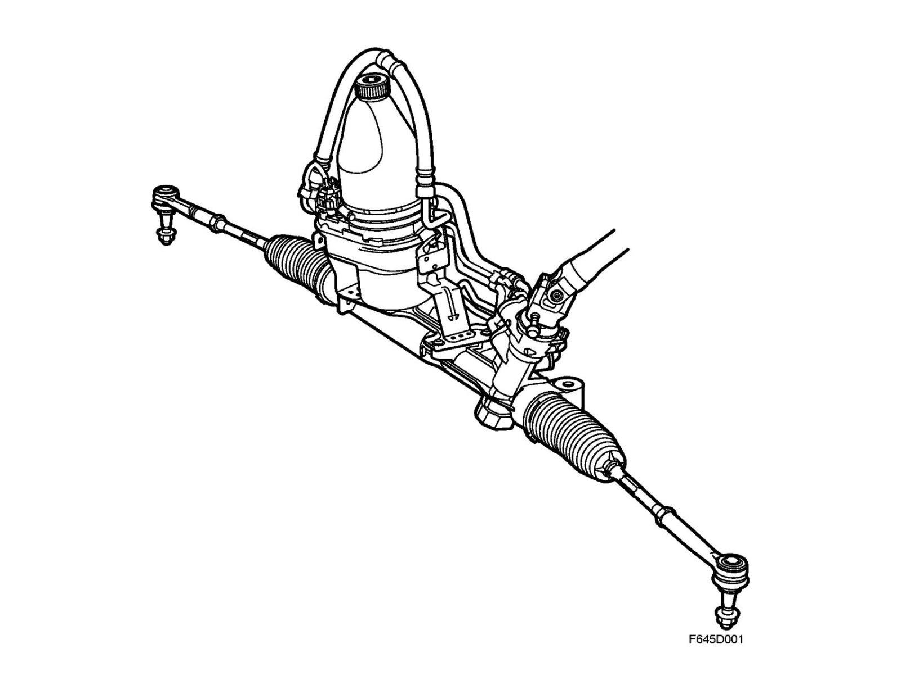
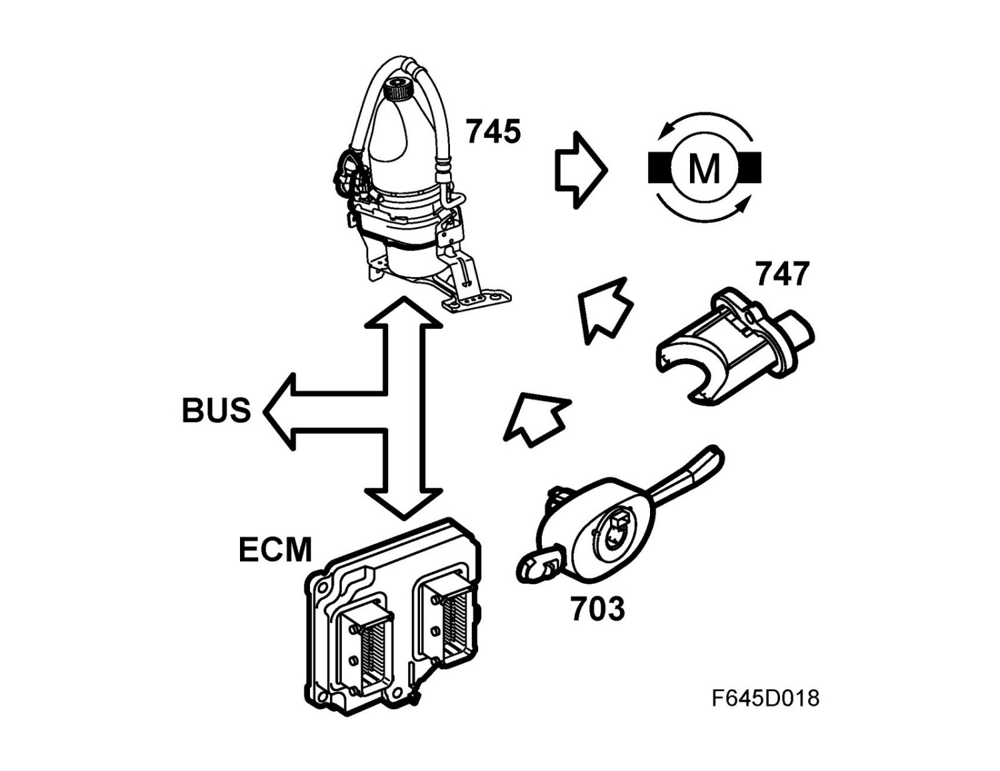
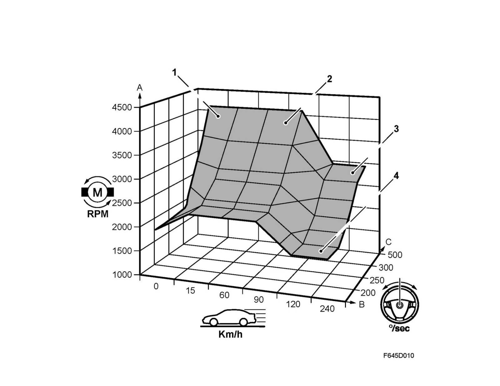
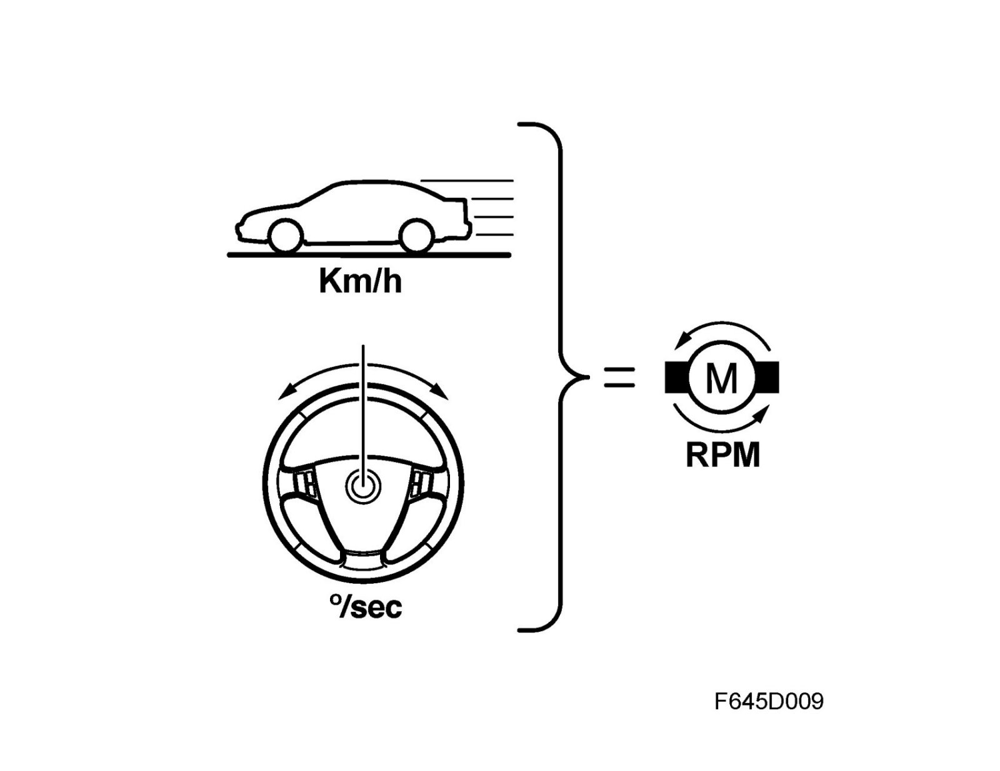
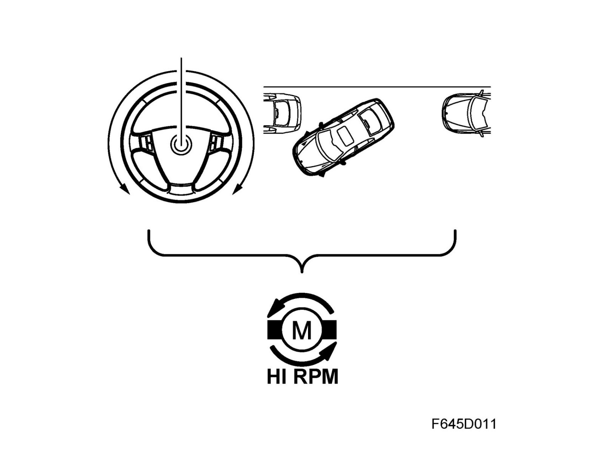
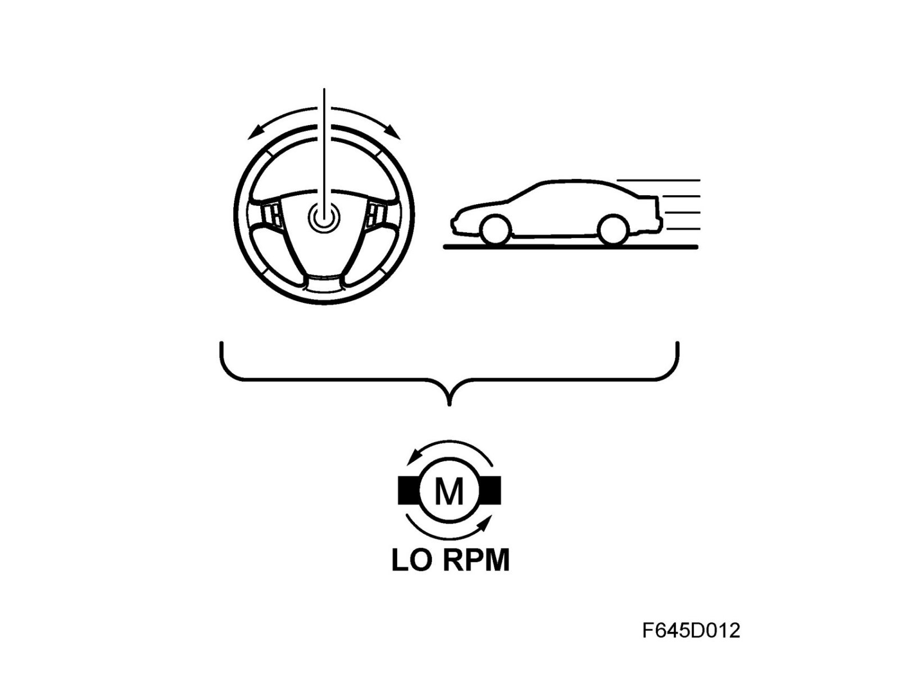
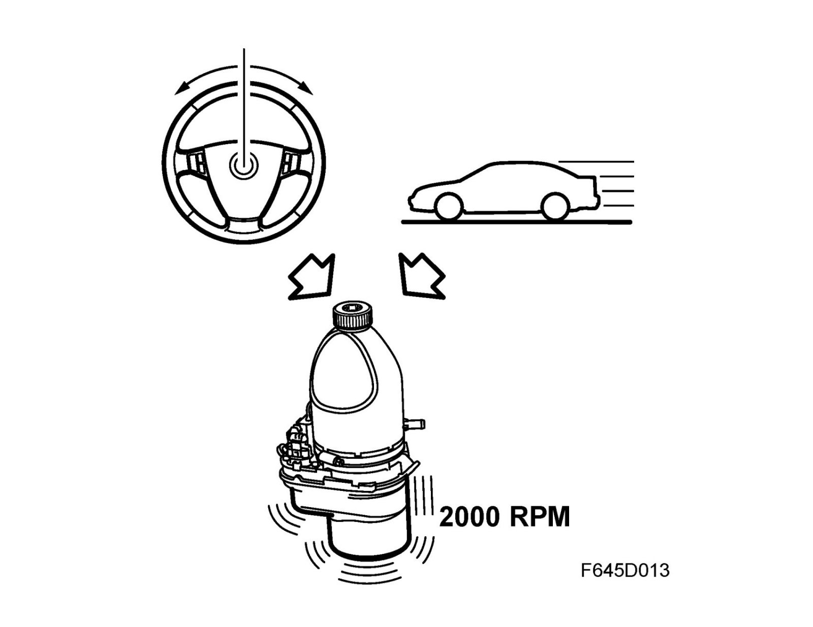
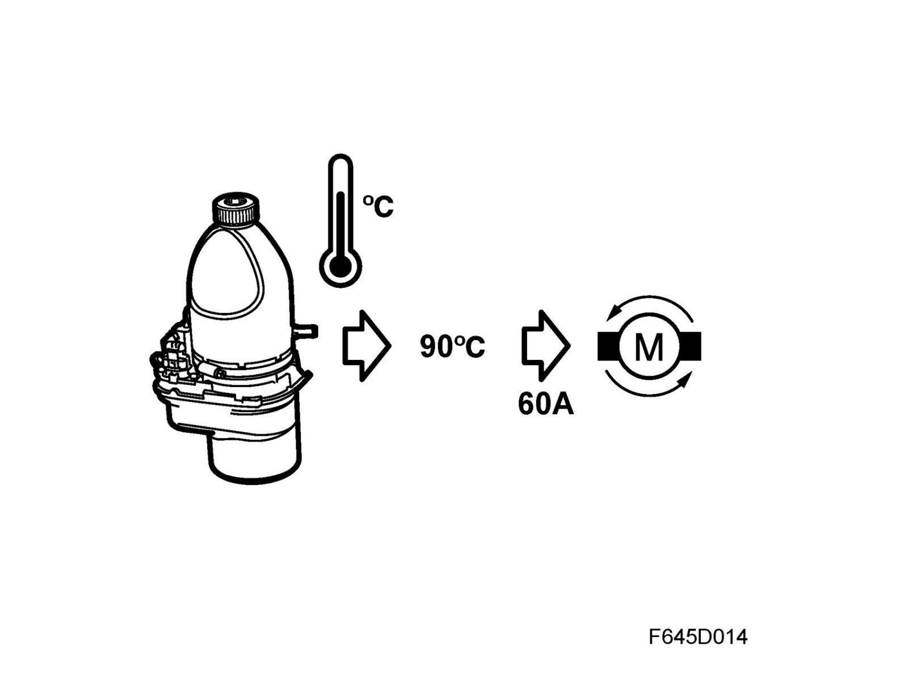
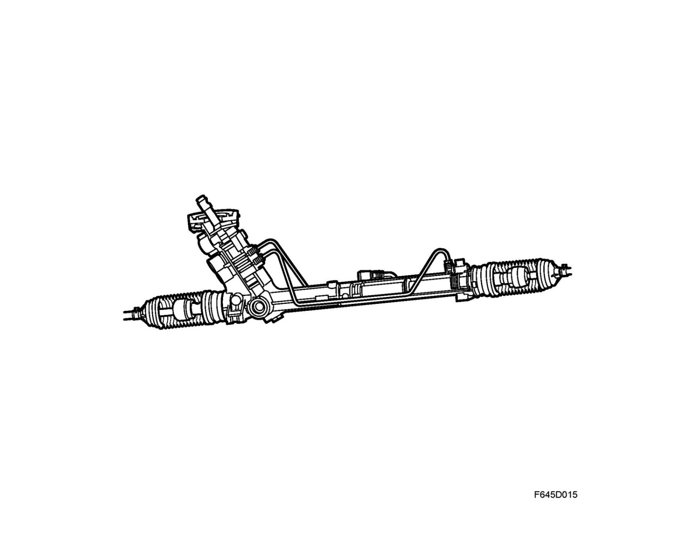

Detailed Description
Detailed description
The control module is an integrated part of the pump assembly and continuously registers the speed of the car (P-bus information from ECM) and the steering wheel angle speed from the steering wheel angle sensor which is integrated into the steering gear. This information is used to control the speed of the pump and consequently the flow of oil.
Cars with Z19 engine alternative that are equipped with ESP use steering wheel angle information from the steering wheel angle sensor in the CIM.

A. Pump speed (rpm)

B. Vehicle speed (km/h)
C. Steering speed (°/s)
1. Rapid steering wheel movements at low vehicle speed
2. Rapid steering wheel movements at intermediate vehicle speed
3. Rapid steering wheel movements at high vehicle speed
4. Slow steering wheel movements at high vehicle speed
The speed of the hydraulic pump is controlled by information on the speed of the vehicle (km/h) and the speed of the steering wheel movement which is measured in degrees/seconds.

At low vehicle speed and rapid steering wheel lock a higher flow is required to provide the necessary servo effect. Accordingly, the speed of the pump motor is increased, see diagram.

At higher vehicle speed and slow steering wheel lock a smaller flow is required. The pump motor can operate at a lower speed in such cases.

On condition that the car engine has started (P-bus message from ECM) the pump motor will always operate with a preprogrammed lowest speed, approx. 2400 rpm.

The maximum capacity of the pump is 119 bar, the flow is regulated with the speed of the pump from 3l/min to a maximum flow of 6 l/min. The speed of the pump is regulated using current intensity, current consumption during operation is regulated from 5A to max. 85A.
The EHPS control module continuously monitors the temperature of the power steering fluid and the circuit board (drive for the pump motor). If the temperature of the power steering fluid exceeds 90°C (194°F) then the current will be regulated to a maximum of 60A in order to protect the internal components.

If the temperature on the circuit board exceeds 175°C (347°F) then the system will be shut down.
In order for EHPS to work again the car engine must be switched off and then restarted.
Steering gear
The function and location of the steering gear is equivalent to other variants of the Saab 9-3 Sport Sedan. For a detailed description of steering gear function, see Power steering system Detailed description.
